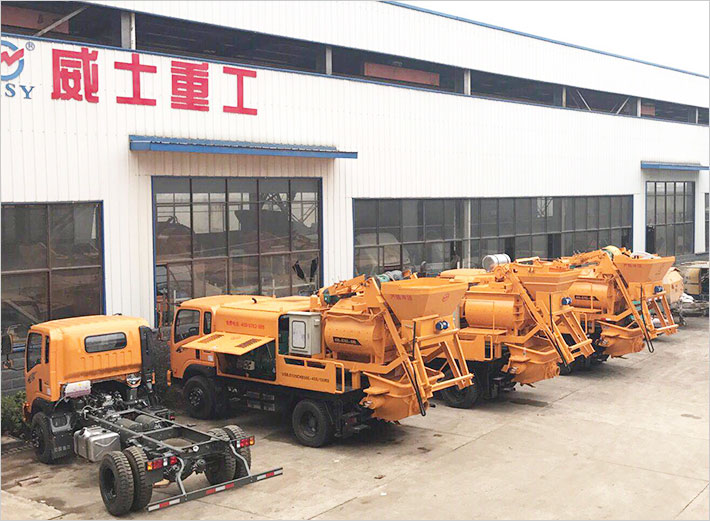

关于我们
湖南威士重工机械有限公司创建于2003年，一直专注致力于混凝土搅拌机械和混凝土泵送设备的研发、生产和销售。通过多年的努力，威士重工已发展成为年产值过亿元的工程机械制造企业，成为了行业中的龙头标杆企业。

湖南威士重工厂区
湖南威士重工机械有限公司创建于2003年，一直专注致力于混凝土搅拌机械和混凝土泵送设备的研发、生产和销售。通过多年的努力，威士重工已发展成为年产值过亿元的工程机械制造企业，成为了行业中的龙头标杆企业。
湖南威士重工厂区
一、混凝土输送系列：混凝土输送泵、车载泵、臂架泵车、工业填充泵。
二、混凝土搅拌泵送系列：滚筒搅拌泵、强制搅拌车载泵、强制搅拌泵车。
三、各种大中小型混凝土搅拌站和稳定拌合站。
四、各种吊臂的研发和制作及特种车辆的改装。
湖南威士重工厂区一角
公司位于湖南省的省会长沙，公司拥有20多名高素质的专业技术和管理人才，获得了20多项产品发明、实用新型专利，并荣获了政府有关部门颁发的国家级《商务诚信AAA级信用企业》、中国机械工业品牌《机械科技创新企业奖》、混凝土搅拌、混凝土输送设备系列《中国行业引领品牌》、《中国自主创新名优产品》、《全国质量、服务、信誉AAA级示范单位》、《中国服务三农扶持中小企业十佳信贷机构》、《中国最具成长力创新型企业》等多项荣誉称号。同时具备2万平米现代化钢结构厂房，数十台大型机械加工设备，通过ISO9000质量管理体系和精益化生产管理，确保生产出高智能化、质量稳定可靠、物美价廉的高科技先进产品，最大程度满足客户的需求。
我们的团队
公司秉承“为用户创造价值”的经营理念，实行“立足湖南，辐射全国”稳健的营销战略，并逐步建立了全国50多个售后服务网点及团队，全方位全天候为威士产品提供精心呵护，让威士重工的每一位合作伙伴获得最大价值和利润。
目前，威士重工生产研发的混凝土搅拌、泵送设备现已销往全国各地，并出口到朝鲜、印度、马来西亚等东南亚国家，深受广大客户的一致好评。
公司宗旨：一切以客户为中心
一切都以站在客户的角度，研发、生产、服务、销售我们的产品
生产：站在客户的角度去研发生产用户更好用更实用的产品；
售后：站在客户角度去想怎样更有保障的去用好我们的产品；
销售：站在客户的角度去帮他选择最适用于他，性价比最高的产品
携手威士重工，共筑美好家园！